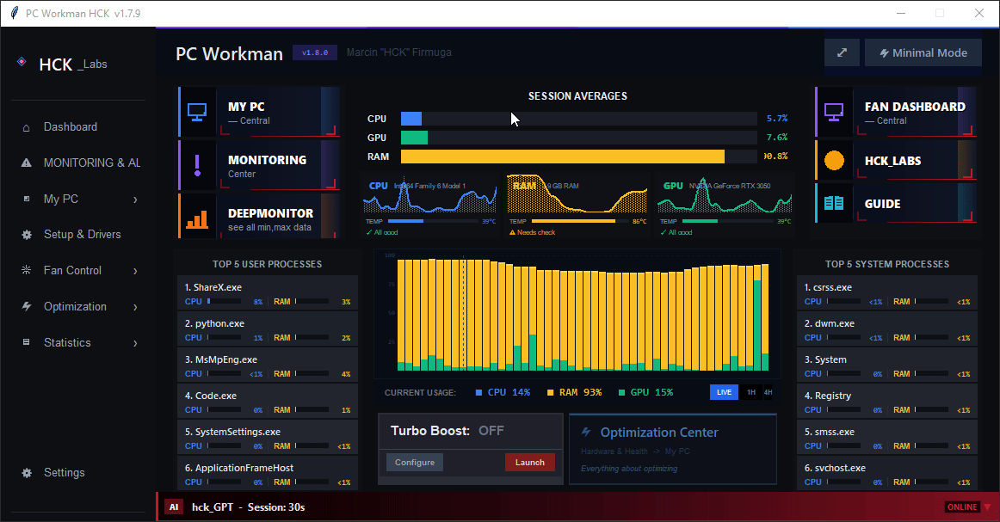
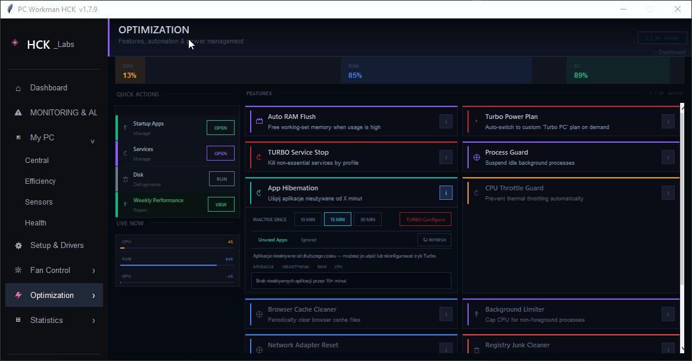

Today I did two things I'll remember for a long time.
I clicked publish on PC Workman 1.8.0 - the biggest release I've ever shipped. And a few hours earlier, I held my certificate from Skills of Tomorrow 3.0 AI — a five-week Google program I'd just finished.
Two milestones, one day, and they took the exact same five weeks. One of them Google structured for me. The other I had to structure myself - out loud, in public, on a ten-year-old laptop that still idles warm. I keep thinking about that symmetry. I spent five weeks being taught, and five weeks teaching a program to learn. Both finished today.

01I didn't ship a feature. I closed a board.
Most releases are a feature. This one was a whole roadmap. For weeks the GitHub project board had a column of issues that all pointed at the same idea, and 1.8.0 is what it looks like when you finally drag every one of them to Done.
An offline mini-antivirus that reasons about who signed a process. A real Startup Manager that finds the apps every other tool misses. A Services Manager you can actually configure. A TURBO suite that stops services, suspends idle apps, flushes RAM, switches power plans — and finally turns on, because for months its button was wired to a flag nothing in the codebase ever wrote. Routing rebuilt so my own questions stopped hitting the wrong answer. DeepMonitor that remembers. And underneath all of it, the thing the entire project was quietly building toward: a monitor with a memory.
That's the part I want to tell you about properly.
02Why a monitor needs a memory
Close HWiNFO. Close Afterburner. Open them tomorrow and they remember nothing about your machine. They draw 78°C against the same line they draw for every PC on Earth. For months PC Workman wasn't much better — and worse, it had two learning engines built in that the chat assistant never once imported. Months of learning it couldn't reach.
1.8.0 fixes that at the root. Every temperature reading now lands in one of five workload buckets — idle, light, medium, heavy, gaming — and each bucket keeps its own learned normal. So the same number splits in two:
82°C at idle = critical.
Same number. Opposite verdict. Judged against the right normal instead of a hardcoded 85°C line.
And the memory actually accumulates. The old engine looked at a rolling 14 days and forgot everything older — but a window can't see drift, and drift is the whole point: paste pumping out, dust building up, capacitors aging. So I rewrote it as a true Welford online accumulator. Three numbers per workload — a running count, mean, and M2 — folded forward, never recomputed. It never re-reads old rows, and the stats survive even after the raw data gets pruned at 90 days.
The voltages work the same way — median and MAD instead of the mean, a modified z-score, and four Nelson SPC rules from the 1960s and 1980s. Boring, predictable statistics. That's exactly why I trust them on someone's power supply. Statistics don't hallucinate.

03An overlay that shows nothing until you choose
Every gaming tool decides what your overlay shows. MSI, Razer, Corsair — they pick, you watch, and most of them vomit forty stats across your screen mid-game. I think that's backwards. So the new in-game overlay starts empty. You drop in exactly what you want — temps in one corner, FPS in another, nothing else — or grab one of three presets. A glance when you want it, invisible when you don't.
It reads real FPS from RTSS (no admin, no injection), floats over borderless games without stealing focus, and — because the app already watches what you're running — it drops a one-second hello when a game launches. "Good luck at the tournament" for CS2. "Fighting a boss today?" for Terraria. A monitor that recognizes your game instead of just measuring your GPU. Small thing. Feels completely different.

04The assistant got a memory too
hck_GPT is the little AI that lives inside the app — 84 intents, fully offline, no API key. This release it stopped giving generic advice and started answering from your data.
Ask "what should I upgrade?" and it reads your own 14-day load history. CPU pinned at 100% while the GPU idles at 55%? It says the CPU is the bottleneck — with the numbers — instead of guessing "buy more RAM." Hot but not actually maxed? It tells you to check cooling before you spend a złoty. Ask "do you spy on me?" and it gives you a straight answer: everything is local, it remembers hardware stats only, never your files, and it points you to the stability tests so you can check for yourself. Even the greetings know you now — say hey and it might come back with "fancy CS2 again today?", pulled from your heaviest process across your whole history.
05The scars I don't hide
This release came out of an audit where I ran every intent in both languages, looking for the bugs that don't scream. The worst ones never do.
except: pass swallowed it. The whole "finish the answer with the LLM" path had been dead for months. Nothing crashed, so nobody noticed.I publish these on purpose. Every Friday I post what I planned on Monday against what actually shipped, scars included, because a build-in-public log that only shows the wins is just marketing with extra steps. The bugs are the honest part.
06Learning, while shipping
Here's where the two milestones meet.
I weld for a living. Before that, night shifts. The thing about reading metal is that nobody hands you the eye for it — it accumulates. Cherry red, straw, the blue that means you've gone too far. You burn enough of it and one day the numbers in your head are yours, not the chart's. That's the exact thing I wanted from a system monitor, and it's the exact thing those five weeks of Google coursework felt like from the inside: not a download of knowledge, but an accumulation of it. A running mean, folded forward, never recomputed.
07By the numbers
One year old this week. Twelve dead projects came before it. This is the one that didn't die — and now it remembers your machine, and you can watch it think.
Next is 2.0.0: the Microsoft Store version, long-term drift detection now that the data finally accumulates, and context-aware profiles. But that's next. This one was about the memory.
What would you ask your PC, if it could actually answer?